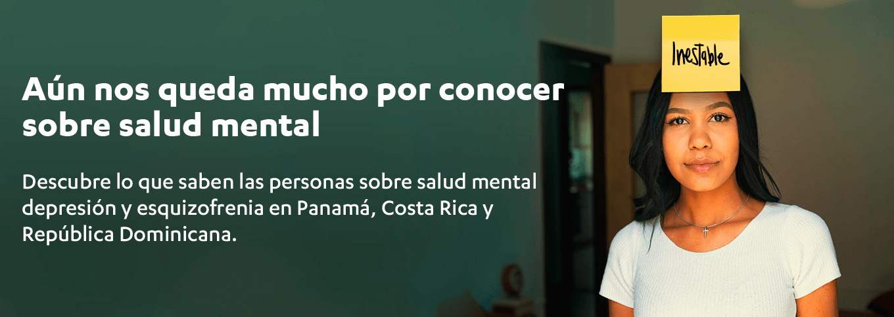
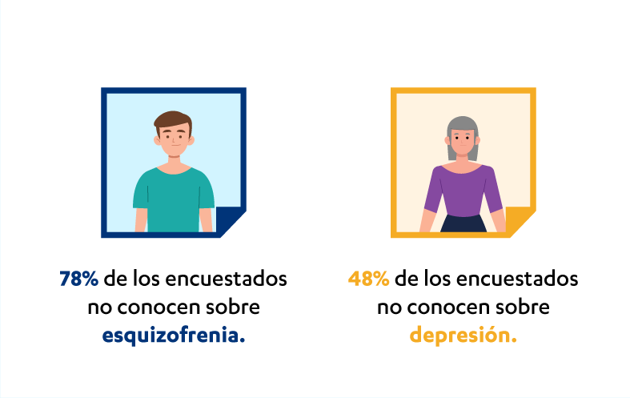
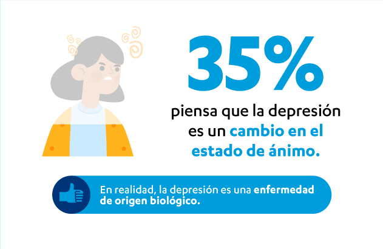
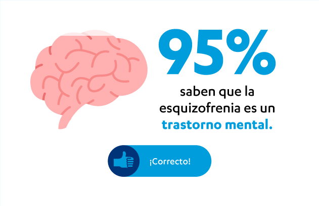
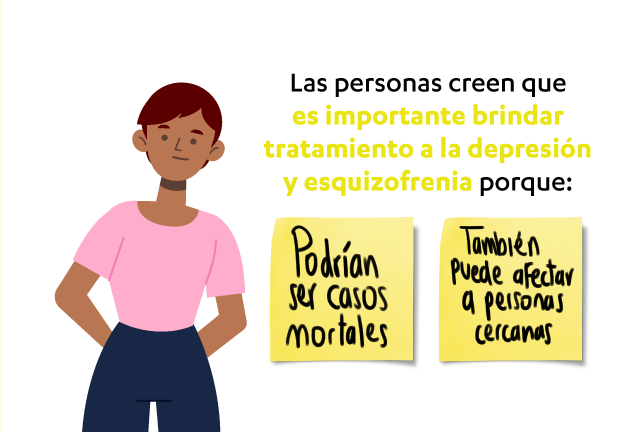
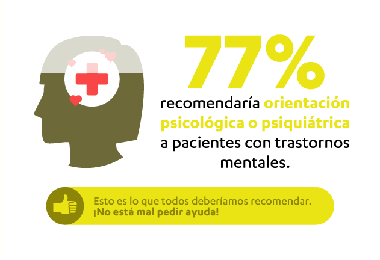
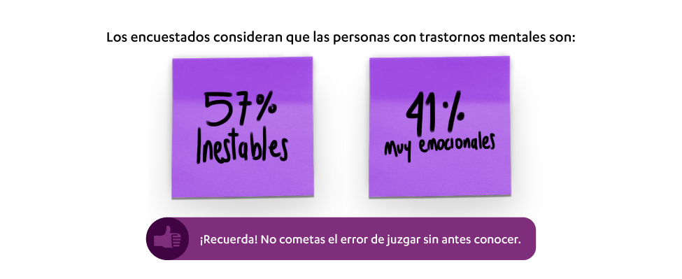

Síguenos en:
















Investigación realizada del 27 de agosto al 2 de septiembre de 2020 por las compañias Auctor y Offerwise a 604 adultos de Panamá, Costa Rica y República mediante un cuestionario digital.